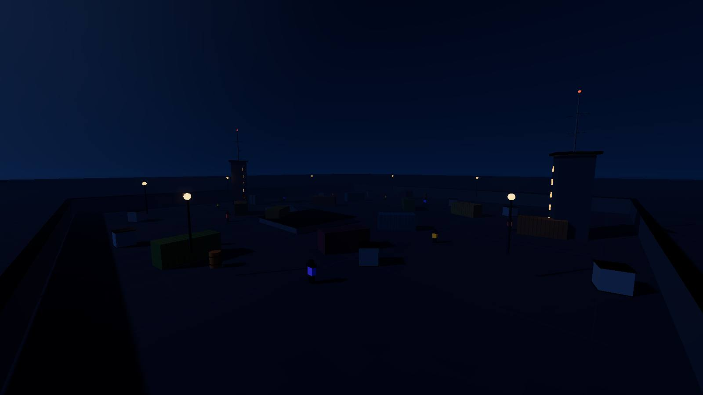
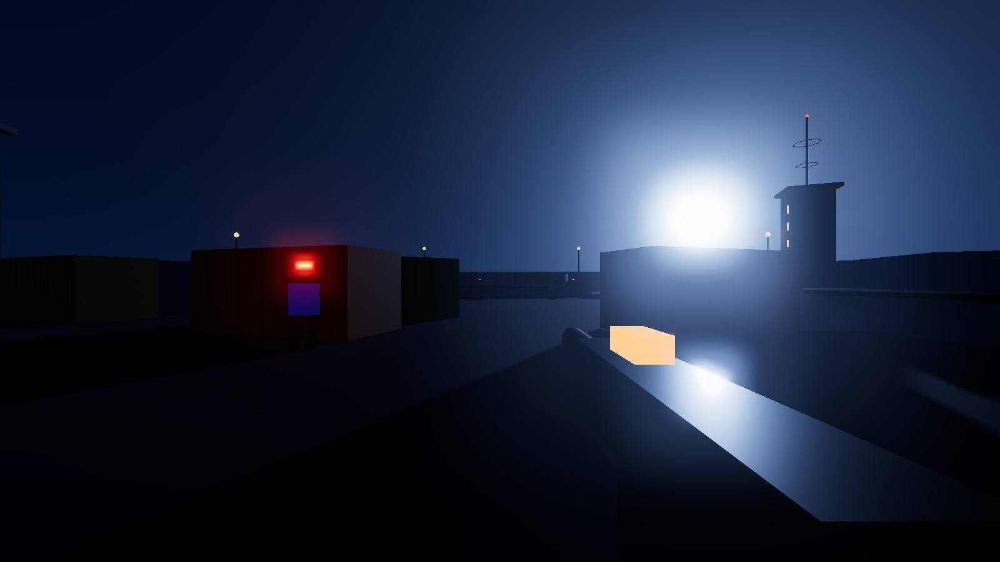
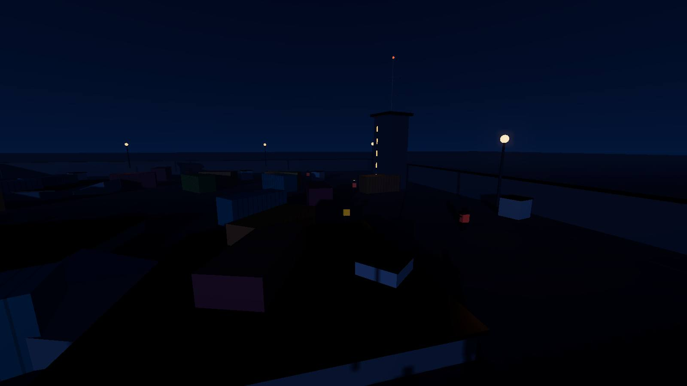
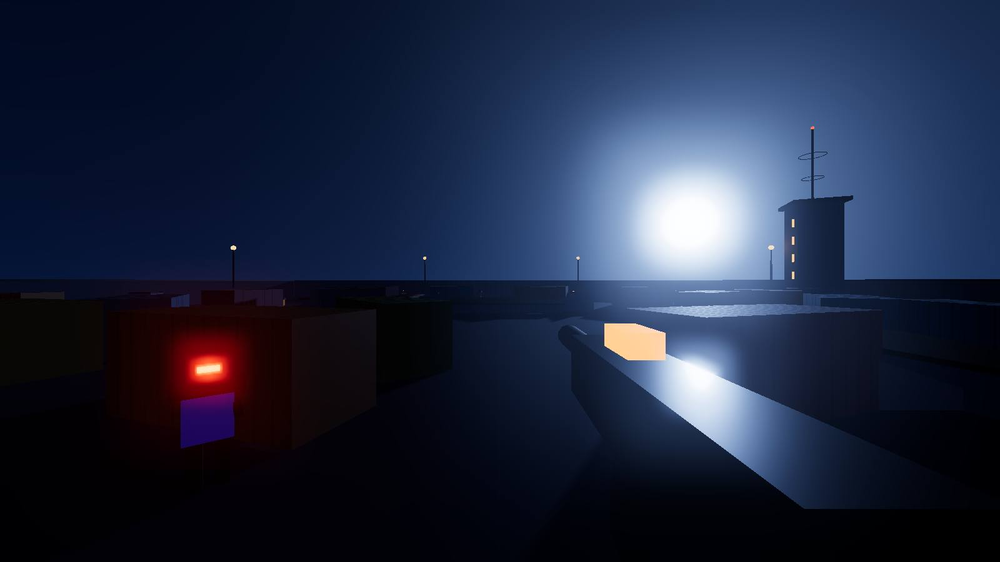
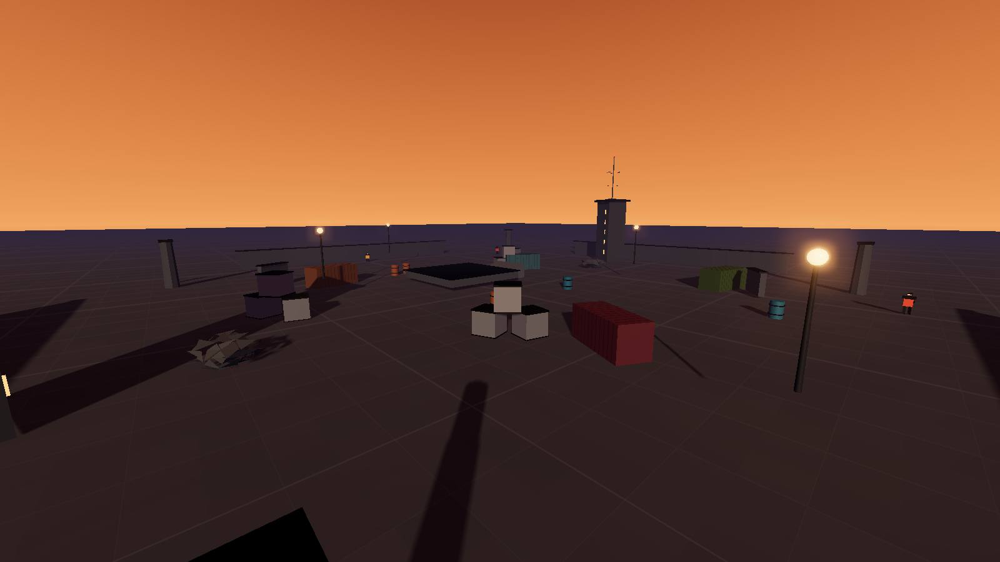
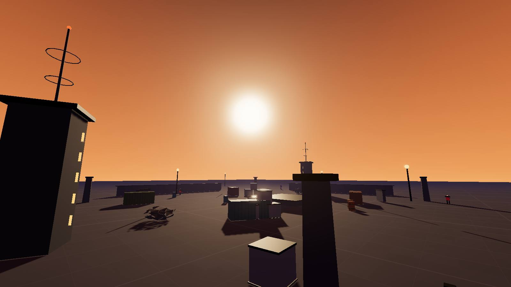
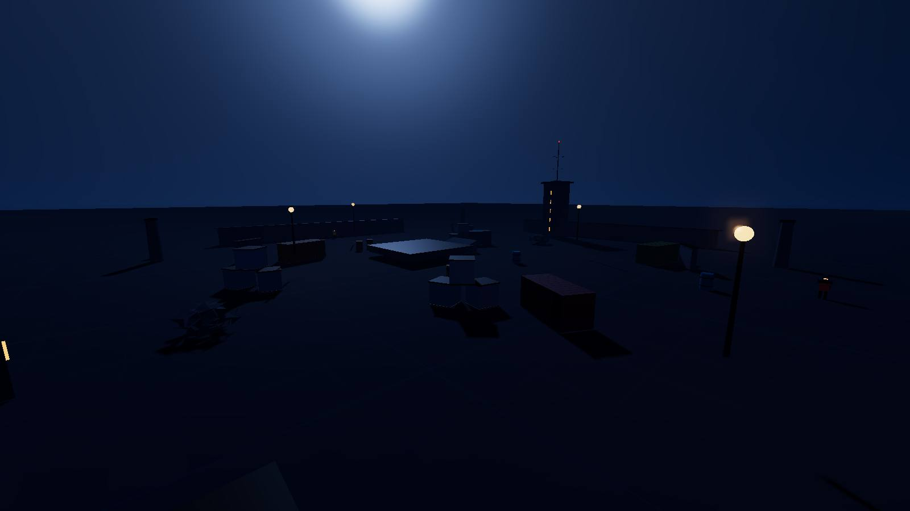
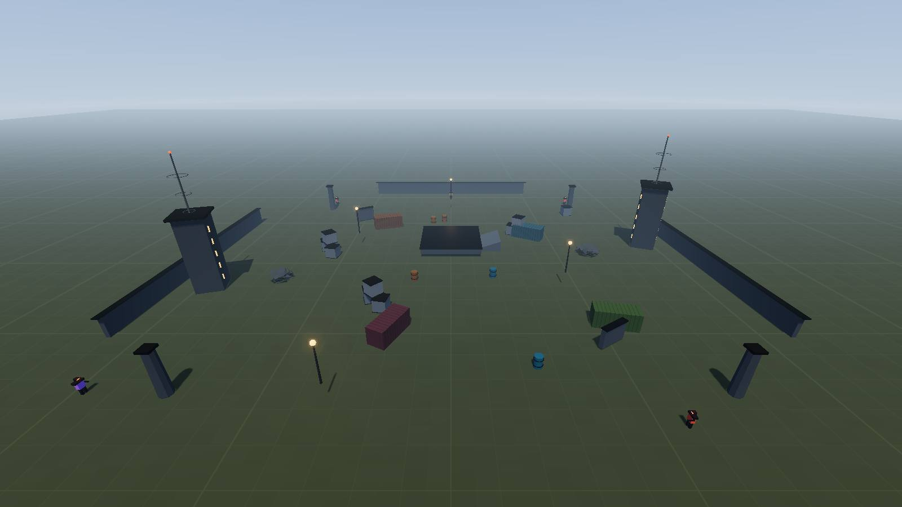

复现腾讯 Hy4 preview 官方 Demo「通过 MCP 接入 Unreal 5 引擎，纯对话从零做射击游戏」的同类思路，
但把引擎换成 Three.js。
AI 不写一行游戏代码，只调工具。
不是「生成代码然后你去看」，而是 AI 通过工具调用，实时改变一个正在运行的 3D 游戏。
每走一步工具调用就截一次真实渲染画面。这让「AI 改了什么」变成肉眼可核对的对比， 而不是一句自述 —— 也正是靠这套回传，调试期抓出了好几个「代码看着没问题」的隐藏 Bug。




整套设计对齐 UE5.8 官方 UnrealMCP 插件 —— 只是把「编辑器进程内的 HTTP Server」换成「独立进程 + WebSocket」。
| UE 5.8 官方方案 | 本实现 |
|---|---|
编辑器进程内 HTTP Server :8000/mcp | 独立进程 stdio + WS :8787 |
UToolsetDefinition / unreal.ToolsetDefinition | MCP tools（zod schema） |
.umap 关卡资产 | Scene Manifest JSON |
start_play_in_editor / stop_play_in_editor | start_simulation / stop_simulation |
get_editor_logs（读引擎日志找错误） | run_playtest（FPS/命中率/受伤 + 难度判定） |
| Viewport Capture | capture_viewport（JPEG base64 回传） |
| Viewport Camera 控制 | set_viewpoint（位置/朝向/FOV，可悬浮取景） |
| Toolset Registry 自动包装 | 手写工具表（19 个，可控） |
其中第 1 条是地基，第 3 条是「能不能真的跑通」的分水岭。
Scene Manifest 是一份纯 JSON —— 环境、道具、敌人、玩法数值全在里面。对应 UE 的 .umap。
sanitizeLevel() 兜住，不让游戏崩底层要精确可控，高层要一句出效果。两层都给，Agent 才不会退化成一堆坐标运算。
原子层：place_props 传 10 组精确坐标。
语义层：{pattern:"ring", count:10, radius:22, faceCenter:true, jitter:1.5} —— 在中心围一圈集装箱、朝向中心、带随机抖动。
最高层 build_arena 一次调用生成完整关卡。这正是官方 Demo 里「从零做一个射击游戏」对应的那个工具。
没有验证闭环，AI 只是在盲改。
capture_viewport → 回传 JPEG，AI 真的能看到画面set_viewpoint → 能飞到任意高度/角度的「审图」能力run_playtest → 机器人接管 N 秒，回报击杀/命中率/受伤，并给出难度判定三者合起来才形成 执行 → 观察 → 修正 的闭环。UE 侧对应 start_play_in_editor + get_editor_logs。
store 给每次变更打类别，浏览器走不同应用路径：
env → 只换光照/雾/色调actors → 重建道具敌人，但保留玩家血量gameplay → 只更新数值，完全不碰场景full → 整体重建好处：调数值时玩家不被打断，改美术时不卡顿。
截图回传不只是「交付好看」，它是主要调试手段。下面这些都是在「代码看起来没问题」的情况下 靠比对画面才发现的：
| # | 症状 | 根因 | 修法 |
|---|---|---|---|
| 1 | 所有截图一律超时 | 浏览器端 _emit 没把请求 id 透给处理器，回包发不出去，Server 干等 15s | 透传 id；capture 加 try/catch 回报错误而不是静默超时 |
| 2 | 所有机位图长得一模一样 | 游戏没进运行态（running=false），player.update() 整段被跳过，相机卡死在原点 | 加 ?autostart=1 + 把 start/stop PIE 做成 MCP 工具 |
| 3 | 高空俯瞰能看穿地面边缘，关卡像悬浮板子 | 地面平面只有 arenaSize+120，从 60 米高往下看直接越过边界 | 地面放大到 arenaSize×8，配合指数雾自然淡出 |
| 4 | 黄昏地面死黑、网格线看不见 | 太阳强度与环境光过低，且相机正对太阳（逆光） | 提亮地表 albedo + 环境光系数 0.55→0.95 |
| 5 | 灯泡糊成一大团白光斑 | 自发光 4.5 + bloom threshold 0.85，HDR 值远超声阈值 | 自发光降到 1.6、阈值提到 1.0、radius 收到 0.4；改用 PointLight 照亮地面 |
| 6 | 夜景几乎全黑，只看见灯 | 环境光不足 + 地表 albedo 过暗，掩体轮廓不可辨 → 玩法崩掉 | 环境光提到 1.35；把平行光当「月光」用，保住背光面体积感 |
| 7 | 出生点正前方 4 米杵着灯柱 | 灯柱摆在 [0,·,30]，而出生点在 z=34 | 灯柱挪到 [-13,·,31] |
| 8 | 玩家一睁眼背对竞技场 | Player 构造函数硬编码 yaw=π，出生点在 +Z 侧 | 清单加 playerYaw 字段，respawn() 应用它 |
环境美术全部由参数驱动：天空三段渐变 + 太阳方位/高度 + 雾色雾浓度 + 曝光 + 泛光。切换预设就是换一组数。




emissiveIntensity 超过 1.0 就必须配 bloom threshold。
阈值定低了整个画面会糊上层雾，暗部失去层次；自发光过高则被拉成一团光斑，
渲染出「发光的马赛克」而不是「灯泡」。
node tools/run-demo.js
自动起服务 + 开浏览器，走完 15 步建关，每步截图存证，最后导出成品关卡 JSON。
node tools/smoke-test.js
启动 → 渲染 → 射击 → MCP 改场景 → 截图 → 试玩 → 撤销，7 项断言。
node tools/gallery.js
十个机位出图，覆盖六套美术预设 + 俯瞰审图 + 第一人称。
server/mcp-server.js 注册到 ~/.workbuddy/mcp.json，
然后在连接器管理页右上角「自定义连接器」点「信任」启用。之后直接说——
「帮我做一个炼狱风格的废墟关卡，掩体稀疏一点，难度拉到 2.5，然后截图看看效果，再跑一次试玩确认难度。」
Agent 会自己走完 build_arena → capture_viewport → set_environment → run_playtest 的闭环。
| 引擎 | 可行性 | 要点 |
|---|---|---|
| Three.js 本仓库 / 3D 场景系列 |
已验证 | 浏览器天生可远程驱动，WebSocket 直接通。换成程序化 3D 世界项目时，只需把清单字段从
props 换成 terrain / landmarks / traffic 即可。 |
| Phaser 3 TBOI 重制 |
高 | 2D 但思路完全一致：清单字段换成 tilemap / entities / spawnTable，
监听 level:* 消息后 scene.restart() 重建。Phaser 重建成本几乎为零，热更新比 3D 还干净。 |
| Godot 4 Nodebuster |
中 | 没有内置 MCP，推荐在 GDScript 里起 WebSocketServer，
Node 监听消息 → 操作 SceneTree，概念与本实现同构。
额外好处：Godot 的 Resource 系统天然可序列化，.tres 就是现成的场景清单。 |
| UE 5.8+ | 官方已支持 | 直接启用内置 UnrealMCP 插件，端点 127.0.0.1:8000/mcp。
自定义能力靠 UToolsetDefinition 子类。注意仍是 Experimental，且仅 loopback、无认证。 |